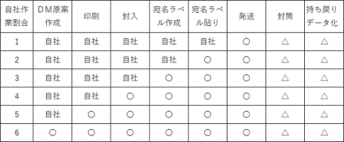

自社で行うＤＭ発送作業のコツとトラブル例
質問
コンサルタントさんと話しているときに、良く聞く話に、「少部数のDM発送代行会社は無いよね」とよく言われます。
「何で豊田さんのところでは少部数のDM発送ができるの？」などと聞かれることがあります。
東京のコンサルタントさんからの質問です。
彼は個人でコンサルを行っている人ですが、今までコンサル継続率の高い隠れた名コンサルタントさんです。
その彼が最近多くの媒体で成約率が落ちて困っているとの相談です。
インターネット広告やDM、チラシ、ポスティングなどが落ち込んでいるとのことでした。
その時に彼が面白いことを言っていいました。
「今まで作りこんで反応率の良かったDMも反応率が落ちてきている。」ということでした。
回答
作業・発送の分類
自社で作業をどこまで行い、どこからＤＭ発送業者に任せるかを明確することが必要になります。
よくあるバターンとしては封入から発送までをＤＭ発送代行業者に任せる方法です。
封入から発送までの各工程をまとめました。
自社でどの工程までを行い、どこからをＤＭ発送代行業者に依頼するか判断基準にしてください。
１ 封入・封綴じ・宛名ラベル作成貼りまでを自社で行い発送のみをＤＭ発送業者に依頼
２ 封入・封綴じ・宛名ラベル作成までを自社で行い宛名ラベル貼りと発送をＤＭ発送業者に依頼
３ 封入・封綴じを自社で行い宛名ラベル作成・貼り、発送までをＤＭ発送業者に依頼
４ 自社で印刷だけを行いＤＭ発送代行業者に宛名ラベル作成から発送までを依頼
５ 自社で印刷原稿まで作成し、ＤＭ発送代行業者に印刷・宛名ラベル作成・封入・発送までを依頼
６ 原稿作成から発送までのすべてをＤＭ発送代行業者に依頼（※１）
※１ 原稿原案かたできるＤＭ発送代行会社は相性をテストすることをお勧めします。

※注意
封筒は自社封筒にするのかＤＭ発送代行業者に依頼するか？
返品物（宛名不明など）のデータ化を自社かＤＭ発送代行業者か？
宛名ラベルの作成では
宛名ラベルはかなり苦戦するところです。
反応率アップのヒントが実は宛名ラベルにもあります。
宛名ラベルの大きさや仕入代金により差が出る部分です。
・宛名ラベルサイズはどれにする
・宛名ラベルに印刷する項目設定
・郵便番号の「－」の有り無しの統一
・住所の重複は
・名前の敬称をどう整えるか
・文字数の多いデータの改行は
・部署名や役職名の統一は
・フォントはどれを使う
・フォントサイズはどのような割り振りをする
・通し番号は何桁
・貼り損じたときの処理はどうする
・宛名ラベルはどこで買う
・住所チェックデータの行ずれチェック
宛名ラベル作成だけでもこれらの問題に直面します。
印刷方法
印刷する方法として
１ インクジェットプリンター
２ カラーレーザープリンター
３ コピー機
４ 印刷業者に依頼
が主流になるのではないでしょうか？
モノクロ印刷を上質紙（コピー紙）で行う場合には問題ありません。
しかし、カラーをきれいに発色させようとすると、どうしても印刷業者に依頼することになります。
１ インクジェットプリンター
インクジェットの場合1枚当たりのコストが田悪なります。
また、たとえ100枚の印刷でも5種類の印刷物がある場合には500枚になり
時間が或る程度かかってしまします。
また以外にインクの減りが早く何回もインクを交換することもあります。
そして、毎月、印刷するような場合、プリンターの故障も良く聞く話です。
当社のお客さんでインクジェットプリンターを使ってA4用紙に２００件分
約２０円から４０円位／Ａ4 １枚あたり（メーカー値）
プリンターの減価償却費とインク代を考えると思いの他費用が掛かります。
２ カラーレーザープリンター
インクジェットプリンターよりも使いやすいと思いますが、やはり
時間とコストは馬鹿になりません。
特に、人が足りないときに、普段の祖ごとの他に印刷作業をプラスするのはストレスになります。
３ コピー機
少部数の場合はコピー機が一番使われるのではないでしょうか？
コピー機によっては画質が問題になり、DMやニュースレターの反応率にも影響
することがありますので注意してください。
３００件以上に出す場合はコスト計算をしっかりしてください。
コピー機の場合はメーカーや契約方法により値段や画質の開きがあります。
４ 印刷業者に依頼
会社として一般的な方法ですが、枚数が少ない場合には地元印刷業者では金額的に受けてもらえないこともあります。
そのため、一般的にはネットでの印刷業者に依頼する方法がとられます。
問題点としては、運送業者を使うため、破損や遅延が起こることがあります。
また激安印刷会社に依頼した場合には枚数が足りない場合などのトラブルを聞きます。
印刷トラブル
自社の印刷機を使って印刷する場合
・プリンターが壊れた
・インクが足りない
・連続印刷ができない
・紙がインクで汚れる
・紙詰まりがひどい
・思った色に仕上がらない
・通常より時間がかかりすぎる
地元印刷業者に依頼する場合
・少部数の印刷が頼めない
・コストがかかりすぎる
・ネット印刷は難しすぎる
・スムーズに進まない
・担当者が疲弊する
ネット印刷に依頼する場合
・予定納期に届かない
・印刷物が破損している
・印刷枚数が少ない
・思っていた印刷内容でなかった
・納期の短縮ができなかった
・振込手数料が変更手数料より高かった
封入作業
封入作業も50通や100通ぐらいの場合には、自社でも封入発送作業は問題なくできます。 しかし実際に作業を始めると、場所や人員の問題でトラブルが発生することも良く聞きます。
よくおこるトラブル
・人員が集まらない
・作業代金が高額になる
・折作業が或る時には上手く折れずに困ったりします。
・紙封筒の封綴じ作業（糊付け作業）
・透明封筒の封閉じも、シワになる、まっすぐ閉じられないなど
・宛名ラベルがまっすぐ貼れない
・同じ紙を重ねて入れてしまう。
・印刷物の数を数えずに封入を始める（封入枚数が合わい時困る）
・封入順序を間違える
・封入方向を間違える
・期限に間に合わない
・封入物をよごしてします。
封入
思いのほか封筒代が高くつきます。
特に紙封筒でDM発送する場合には、封筒印刷が必要になりますので余計に金額が増えます。
価格の安い透明封筒も大量に買わないと割安にならないので、思いのほか高くつきます。
また透明封筒の場合は経年劣化が激しいので、長期保存には向きません。
発送料金
ヤマト運輸のクロネコDM便や佐川急便のゆうメール便、郵便局のゆうメール便などは大口割引があるので、DM発送代行業者は大きな割引を受けています。
クロネコDM便は個人との契約ができないので、個人がDMを出す場合に困ります。
その適用を受けるために、郵便番号の小さいものから順番に仕分け、全国の特定地域ごとに仕分けて、縛る作業を行い納品しています。
多くの場合、DM発送専門業者に頼む方が安く上がります。
一番の問題点
一番の問題点は人件費です。
社員の方に別途作業を行ってもらうと、かなり割高になります。
しかも、社員の方は通常業務をこなしながら、DM封入・発送作業を行わなければならないので、時間外の作業になることが多くなります。
住所不明で戻ってきたDMをだれが管理するのか？
トラブルがあったときはだれが責任を取るのか？
自社で作業するメリット
自社で作業するときにはコストの面だけではなく下記のことが考えられます。
・自社で心を込めてお客様に発送する（実は有効な手段です）
・社内コンプライアンスで宛名データを社外に持ち出せない（宛名ラベル自社作成）
・梱包などを行う部門がある（ＤＭ作業も行える）
・社内に余剰人員がいる。
・封入物の個別作業が多い（10パターン以上になる）
・変更作業が頻繁に起こる
まとめ
現在は当社では50通から1000通ぐらいのDM発送代行の仕事が急激に増えています。
当社に依頼していただく会社さんの依頼理由は
・自社内では人手が集まらず作業ができない
・人件費が高騰
・発送件数が増え自社作業できない
・社員からの不満
・トラブルが多い
・ＤＭ発送代行業者の方が安い
・期日に間に合わない
等の理由により自社での作業をDM発送代行会社に依頼することが増えています。
DMを安く送る方法 関連ページ
他のおすすめ記事
031_DM発送代行業者(会社)の比較方法
114_DM発送代行比較サイトの長所と短所
147_ＤＭ発送代行業者への問題点
222_ニュースレターを入れる封筒
215_人材不足はニュースレターで
前の記事
242_アンケートの効果的な作り方
次の記事